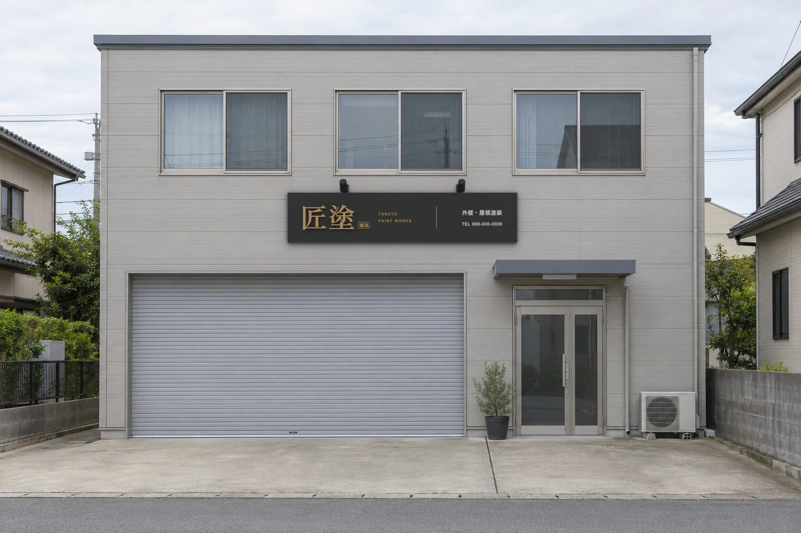
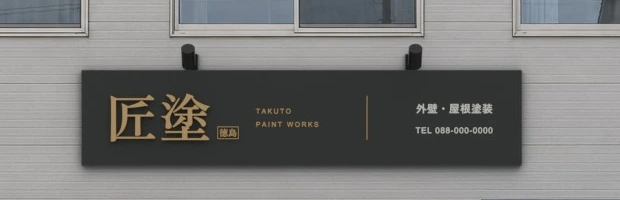

匠塗の看板 見た目案
事務所の写真に、Blender で作った看板を置いた見本です。写真も看板も架空です。


看板の作り
- 墨黒のアルミ複合板の箱看板。幅3.6m・高さ78cm
- 「匠塗」は真鍮色の金属の切り文字で、板から少し浮かせて影を出す
- サイトのロゴと同じく「徳島」の印と TAKUTO PAINT WORKS を添える
- 右側に「外壁・屋根塗装」と電話番号（見本用の番号）を生成りの色で
- 上の2つの照明は、夕方の版で点けて文字を照らす予定
このあと
- この方向でよければ、夕方に照明が点いた写真と、看板へ寄っていく短い動画を作ります